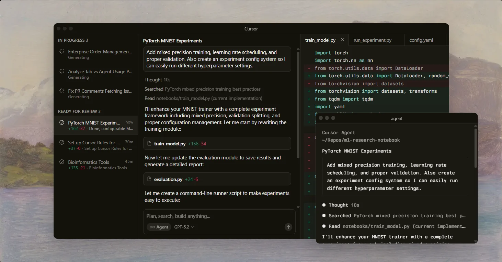
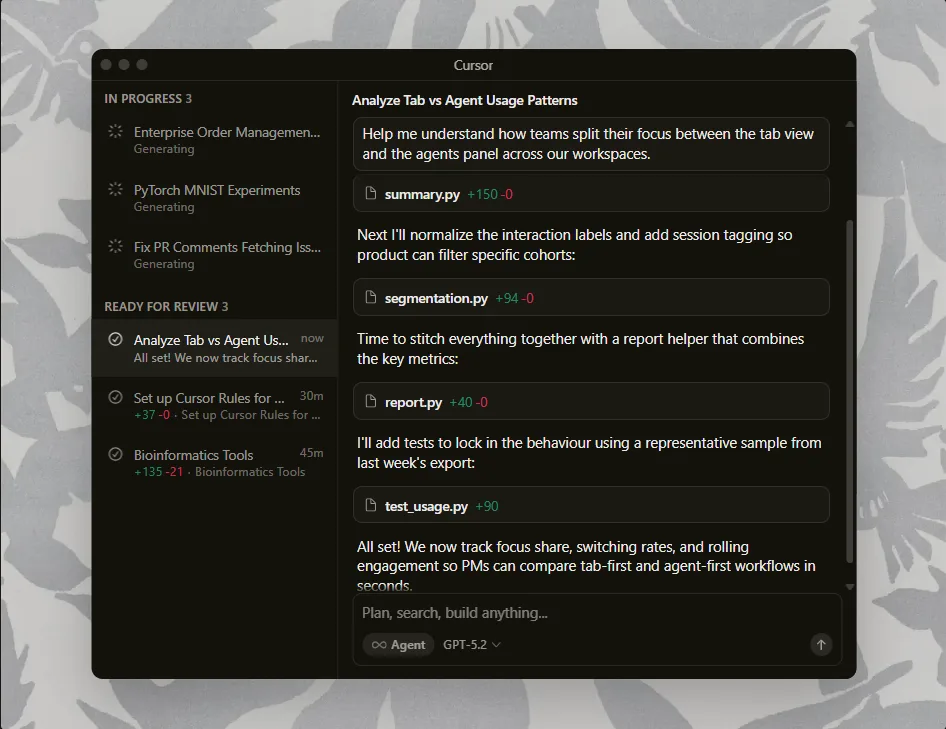
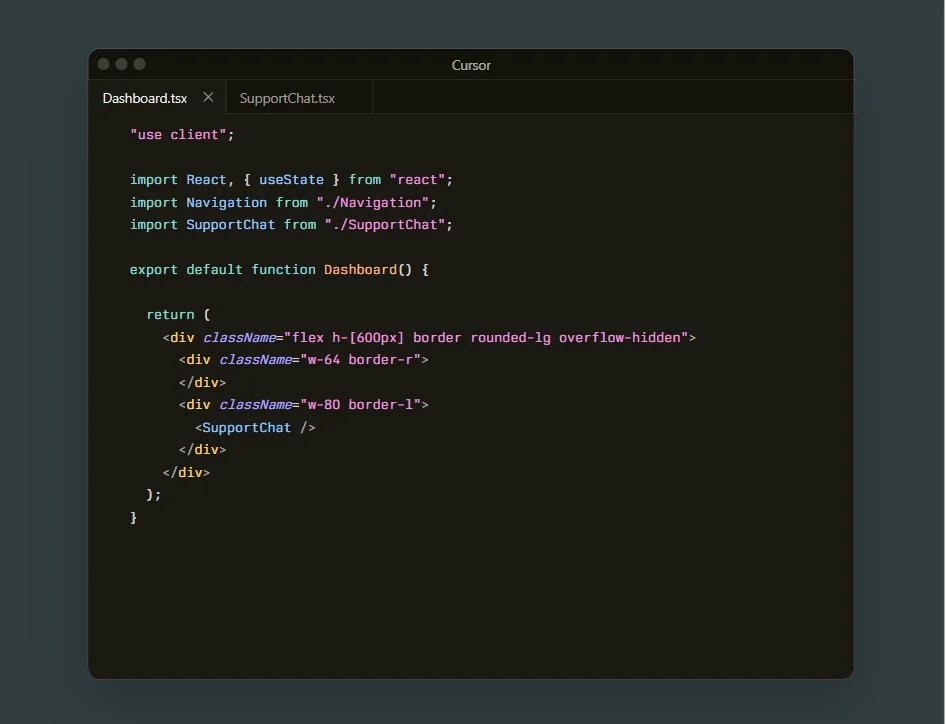
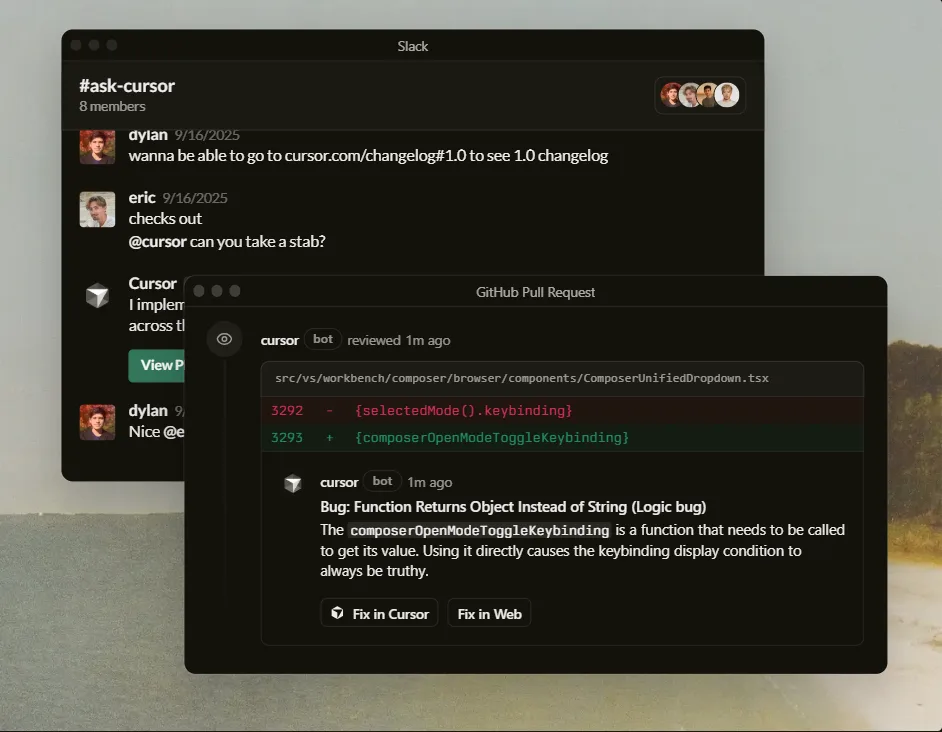

Built to make you extraordinarily productive,
Cursor is the best way to code with AI.
Download for Windows
⤓
Trusted every day by millions of professional developers.


Agent turns ideas into code
A human-AI programmer, orders of magnitude more effective than any developer alone
Learn about Agent →
Magically accurate autocomplete
Our custom Tab model predicts your next action with striking speed and precision
Learn about Tab →
Everywhere software gets built
Cursor is in github reviewing your PRs, a teammate in Slack, and anywhere else you work
Learn about Cursor's ecosystem →
The new way to build software.
Diana Hu
General Partner, Y Combinator
Jensen Huang
President & CEO, Nvidia
Andrej Karapathy
CEO, Eureka Labs
Patrick Collison
Co-Founder & CEO, Stripe
Shadcn
Creator of shadcn/ui
Greg Brockman
President, OpenAI
Stay on the frontier
Access the best models
Choose between every cutting-edge model from OpenAI, Anthropic, Gemini, and xAI
Explore models ↗Complete codebase understanding
Cursor learns how your codebase works, no matter the scale or complexity
Learn about semantic search ↗Develop enduring software
Trusted by over half of the Fortune 500 to accelerate development, securely and at scale
Explore enterprise ↗Changelog
Subagents, Skills, and Image Generation
CLI Agent Modes and Cloud Handoff
New CLI Features and Improved CLI Performance
Layout Customization and Stability Improvements
Cursor is and applied team focused on building the future of coding
Recent highlights
Introducing Cursor 2.0 and Composer
A new interface and our first coding model, both purpose-built for working with agents.
Improving Cursor Tab with online RL
Our new Tab model makes 21% fewer suggestions while having 28% higher accept rate.
1.5x faster MoE training with custom MXFP8 kernels
Achieving a 3.5x MoE layer speedup with a complete rebuild for Blackwell GPUs.